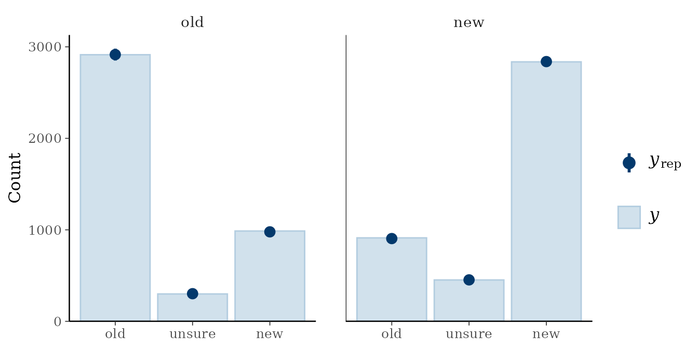

Comprehensive Fit Example with Crossed-Random Effects
Comprehensive-Fit-Example-with-Crossed-Random-Effects.RmdWe begin the analysis by loading mptstan. We then use
options() to auto-detect the numbers of cores and ensure
fitting uses multiple cores.
library(mptstan)
options(mc.cores = parallel::detectCores())We show the analysis of a recognition memory data set (from Singmann,
Kellen, & Klauer, 2013) using the unsure-extended 2-high threshold
model to a dataset investigating the other-race effect (i.e., a study
with two different types of old and new items, own-race faces and
other-race faces). This data is available in mptstan as
skk13. We will analyse this data using crossed-random
effects for participants and items.
str(skk13)
#> 'data.frame': 8400 obs. of 7 variables:
#> $ id : Factor w/ 42 levels "1","3","5","6",..: 1 1 1 1 1 1 1 1 1 1 ...
#> $ trial: Factor w/ 200 levels "1","2","3","4",..: 1 2 3 4 5 6 7 8 9 10 ...
#> $ race : Factor w/ 2 levels "german","arabic": 2 1 1 1 1 1 1 2 1 1 ...
#> $ type : Factor w/ 2 levels "old","new": 1 1 2 2 1 1 1 1 2 2 ...
#> $ resp : Factor w/ 3 levels "old","unsure",..: 3 1 3 1 1 1 3 1 3 3 ...
#> $ rt : num 4.68 2.75 4.25 1.6 0.95 ...
#> $ stim : Factor w/ 200 levels "A001","A002",..: 40 132 117 143 140 162 193 19 120 170 ...Because we want the MPT model parameters to differ across the
race factor in the data (i.e., the race of the
to-be-recognised face), we set contrasts appropriate for Bayesian models
for the current R session using
options(contrasts = ...). In particular, we use the
contrasts proposed by Rouder et al. (2012) that guarantee two things:
(a) contrasts sum to zero: for each factor/coefficient, 0 corresponds to
the mean value and not to a specific factor level. Consequently, these
contrasts are appropriate for models that include interactions. (b)
contrasts have the same marginal priors for each factor level. These
priors are available in package bayestestR as
contr.equalprior. (Note that setting contrasts using
options() affect most regression functions in
R, such as lm and lmer.)
library("bayestestR")
options(contrasts=c('contr.sum', 'contr.equalprior'))Step 1: Create MPT Model Object
The first step when using mptstan is the creation of a
MPT model object using make_mpt() (which creates an object
of class mpt_model).
make_mpt() can read MPT models in both the commonly used
EQN model format (e.g., used by TreeBUGS) and
the easy format introduced by MPTinR.
# For the easy EQN format, we just need the EQN file location:
EQNFILE <- system.file("extdata", "u2htm.eqn", package = "mptstan")
u2htsm_model <- make_mpt(EQNFILE) ## make_mpt() auto-detects EQN files from name
#> model type auto-detected as 'eqn'
#> Warning: parameter names ending with a number amended with 'x'
u2htsm_model
#>
#> MPT model with 4 independent categories (from 2 trees) and 4 parameters:
#> Dn, Do, g1x, g2x
#>
#> Tree 1: old
#> Categories: old, unsure, new
#> Parameters: Do, g1x, g2x
#> Tree 2: new
#> Categories: old, unsure, new
#> Parameters: Dn, g1x, g2x
## Alternatively, we can just enter the equations and use the easy format.
u2htm <- "
# Old Items
Do + (1 - Do) * (1 - g1) * g2
(1 - Do) * g1
(1 - Do) * (1 - g1) * (1 - g2)
# New Items
(1 - Dn) * (1 - g1) * g2
(1 - Dn) * g1
Dn + (1 - Dn) * (1 - g1) * (1 - g2)
"
# for the easy format, we need to specify tree names and category names
u2htsm_model_2 <- make_mpt(text = u2htm,
trees = c("old", "new"),
categories = rep(c("old", "unsure", "new"), 2))
#> Warning: parameter names ending with a number amended with 'x'
u2htsm_model_2
#>
#> MPT model with 4 independent categories (from 2 trees) and 4 parameters:
#> Dn, Do, g1x, g2x
#>
#> Tree 1: old
#> Categories: old, unsure, new
#> Parameters: Do, g1x, g2x
#> Tree 2: new
#> Categories: old, unsure, new
#> Parameters: Dn, g1x, g2xAs shown in the output, if a model parameter ends with a number,
mptstan adds an x to the parameter name (as
brms cannot handle custom parameters ending with a number).
If a model already has a parameter with this name (i.e., the original
parameter name ending with a number plus x) this might leave to problems
and should be avoided.
Step 2: Create Formula (Optional)
The second and optional step is creating an MPT formula object with
mpt_formula(). Here, we show the case in which the same
formula applies to all MPT model parameters. In this case, we specify
only a single formula and also need to pass the MPT model object (as the
model argument).
In the formula, the left-hand-side specifies the response variable
(in the present case resp) and the right-hand side
specifies the fixed-effect regression coefficients and random-effect
(i.e., multilevel) structure using the brms-extended
lme4 syntax. Here, we have one fixed-effect, for the
race factor. Furthermore, we have both by-participant and
by-item random-effect terms. For the by-participant random-effect term
we estimate both random intercepts and random slopes for
race (as race is a within-participants
factor). For the by-item random-effect term we only estimate random
intercepts. For both random-effect terms we add a unique identifier
between the regression structure for the random-effect term (i.e.,
race or 1) and the grouping factor (i.e.,
id and stim), p for participants
and i for items. These identifiers ensures that
random-effect correlations are estimated across MPT model parameters. In
other words, these identifiers ensure that for each random-effect term
the full correlation matrix across all MPT model parameters is estimated
in line with Klauer’s (2010) latent trait approach.
u2htm_formula <- mpt_formula(resp ~ race + (race|p|id) + (1|i|stim),
model = u2htsm_model)
u2htm_formula
#> MPT formulas for long / non-aggregated data (response: resp):
#> Dn ~ race + (race | p | id) + (1 | i | stim)
#> Do ~ race + (race | p | id) + (1 | i | stim)
#> g1x ~ race + (race | p | id) + (1 | i | stim)
#> g2x ~ race + (race | p | id) + (1 | i | stim)As shown in the output, if we specify a MPT model formula with only a
single formula, this formula applies to all MPT model parameters. In
this case, using mpt_formula() is optional and we could
also specify the formula as the first argument of the fitting function,
mpt().
Creating a formula object is not optional if you want to specify an
individual and potentially different formula for each MPT model
parameter. In this case, the left-hand-side of each formula needs to
specify the MPT model parameter and the response variable needs to be
specified via the response argument. For examples, see
?mpt_formula.
Step 3: Fit Model
With the MPT model object and model formula we are ready to fit the
MPT model. For this, we use function mpt() which in
addition to the two aforementioned objects requires the data as well as
the variable in the data distinguishing to which tree (or data type) a
particular response belongs. In the present case that is the
type variable. (The tree variable can only be omitted in
case the model consists of solely one tree.)
In addition to the required arguments (model object, formula, data,
and tree variable), we can pass further arguments to
brms::brm() and onward to rstan::stan(), which
ultimately performs the MCMC sampling. Here, we also pass
init_r = 0.5 which ensures that the random start values are
drawn from a uniform distribution ranging from -0.5 to 0.5 (instead of
the default -2 to 2). Our testing has shown that with
init_r = 0.5 MPT models with random-effect terms are much
less likely to fail initialisation. We could pass further arguments such
as chains, warmup, iter, or
thin to control the MCMC sampling.
Note that fitting this model can take up to an an hour or longer (depending on your computer).
fit_skk <- mpt(u2htm_formula, data = skk13,
tree = "type",
init_r = 0.5
)
#> Warning: Bulk Effective Samples Size (ESS) is too low, indicating posterior means and medians may be unreliable.
#> Running the chains for more iterations may help. See
#> https://mc-stan.org/misc/warnings.html#bulk-ess
#> Warning: Tail Effective Samples Size (ESS) is too low, indicating posterior variances and tail quantiles may be unreliable.
#> Running the chains for more iterations may help. See
#> https://mc-stan.org/misc/warnings.html#tail-essStep 4: Post-Processing
mptstan uses brms::brm() for model
estimation and returns a brmsfit object. As a consequence,
the full post-processing functionality of brms and
associated packages is available (e.g., emmeans,
tidybayes). However, for the time being
mptstan does not contain many MPT-specific post-processing
functionality with the exception of mpt_emmeans as
introduced below. Thus, the brms post-processing
functionality is mostly what is available. Whereas this functionality is
rather sophisticated and flexible, it is not always perfect for MPT
models with many parameters.
When inspecting post-processing output from brms, the
most important thing to understand is that brms does not
label the first parameter in a model (i.e., as shown in the model
object). For example, the model parameter Intercept refers
to the intercept of the first MPT model parameter (i.e., Dn
in the present case). All other parameters are labelled with the
corresponding MPT model parameter name, but not the first MPT model
parameter.
The default summary() method for brms
objects first lists the estimates for the random-effects terms and then
the estimates of the fixed-effects regression coefficients. As mentioned
in the previous paragraphs, all estimates have a label clarifying which
MPT model parameter they refer to with the exception of estimates
referring to the first MPT model parameter, here Dn.
summary(fit_skk)
#> Family: mpt
#> Links: mu = probit; Do = probit; g1x = probit; g2x = probit
#> Formula: resp ~ race + (race | p | id) + (1 | i | stim)
#> Do ~ race + (race | p | id) + (1 | i | stim)
#> g1x ~ race + (race | p | id) + (1 | i | stim)
#> g2x ~ race + (race | p | id) + (1 | i | stim)
#> Data: structure(list(id = structure(c(1L, 1L, 1L, 1L, 1L (Number of observations: 8400)
#> Draws: 4 chains, each with iter = 2000; warmup = 1000; thin = 1;
#> total post-warmup draws = 4000
#>
#> Multilevel Hyperparameters:
#> ~id (Number of levels: 42)
#> Estimate Est.Error l-95% CI u-95% CI Rhat
#> sd(Intercept) 0.78 0.18 0.48 1.20 1.01
#> sd(race1) 0.11 0.09 0.00 0.33 1.01
#> sd(Do_Intercept) 0.56 0.09 0.41 0.75 1.00
#> sd(Do_race1) 0.09 0.05 0.01 0.21 1.01
#> sd(g1x_Intercept) 1.06 0.15 0.81 1.41 1.00
#> sd(g1x_race1) 0.15 0.05 0.07 0.25 1.00
#> sd(g2x_Intercept) 0.54 0.09 0.38 0.74 1.00
#> sd(g2x_race1) 0.24 0.06 0.14 0.36 1.00
#> cor(Intercept,race1) -0.04 0.33 -0.66 0.62 1.00
#> cor(Intercept,Do_Intercept) 0.44 0.17 0.07 0.73 1.00
#> cor(race1,Do_Intercept) -0.07 0.32 -0.64 0.59 1.00
#> cor(Intercept,Do_race1) 0.05 0.29 -0.53 0.60 1.00
#> cor(race1,Do_race1) -0.06 0.33 -0.66 0.58 1.00
#> cor(Do_Intercept,Do_race1) 0.19 0.30 -0.44 0.71 1.00
#> cor(Intercept,g1x_Intercept) -0.02 0.21 -0.41 0.41 1.01
#> cor(race1,g1x_Intercept) -0.02 0.33 -0.65 0.62 1.02
#> cor(Do_Intercept,g1x_Intercept) 0.02 0.16 -0.30 0.35 1.01
#> cor(Do_race1,g1x_Intercept) -0.21 0.28 -0.66 0.41 1.00
#> cor(Intercept,g1x_race1) -0.17 0.24 -0.62 0.33 1.00
#> cor(race1,g1x_race1) -0.06 0.32 -0.66 0.56 1.00
#> cor(Do_Intercept,g1x_race1) 0.26 0.21 -0.18 0.66 1.00
#> cor(Do_race1,g1x_race1) -0.02 0.31 -0.61 0.58 1.00
#> cor(g1x_Intercept,g1x_race1) 0.28 0.25 -0.26 0.71 1.00
#> cor(Intercept,g2x_Intercept) -0.43 0.19 -0.77 -0.02 1.01
#> cor(race1,g2x_Intercept) 0.04 0.32 -0.58 0.64 1.00
#> cor(Do_Intercept,g2x_Intercept) 0.02 0.18 -0.32 0.38 1.00
#> cor(Do_race1,g2x_Intercept) 0.03 0.29 -0.54 0.59 1.00
#> cor(g1x_Intercept,g2x_Intercept) 0.19 0.19 -0.20 0.52 1.01
#> cor(g1x_race1,g2x_Intercept) 0.25 0.24 -0.22 0.69 1.00
#> cor(Intercept,g2x_race1) 0.32 0.21 -0.14 0.69 1.00
#> cor(race1,g2x_race1) 0.12 0.34 -0.55 0.71 1.01
#> cor(Do_Intercept,g2x_race1) 0.16 0.19 -0.23 0.52 1.00
#> cor(Do_race1,g2x_race1) 0.15 0.30 -0.47 0.69 1.01
#> cor(g1x_Intercept,g2x_race1) 0.13 0.21 -0.29 0.53 1.00
#> cor(g1x_race1,g2x_race1) -0.16 0.27 -0.65 0.38 1.00
#> cor(g2x_Intercept,g2x_race1) -0.12 0.22 -0.54 0.32 1.00
#> Bulk_ESS Tail_ESS
#> sd(Intercept) 1114 1903
#> sd(race1) 862 2017
#> sd(Do_Intercept) 1601 2373
#> sd(Do_race1) 608 1192
#> sd(g1x_Intercept) 1769 2106
#> sd(g1x_race1) 1927 1821
#> sd(g2x_Intercept) 776 1791
#> sd(g2x_race1) 808 1606
#> cor(Intercept,race1) 3807 2430
#> cor(Intercept,Do_Intercept) 1042 1701
#> cor(race1,Do_Intercept) 423 898
#> cor(Intercept,Do_race1) 3241 2495
#> cor(race1,Do_race1) 1350 2299
#> cor(Do_Intercept,Do_race1) 2825 2447
#> cor(Intercept,g1x_Intercept) 457 1061
#> cor(race1,g1x_Intercept) 192 301
#> cor(Do_Intercept,g1x_Intercept) 998 1948
#> cor(Do_race1,g1x_Intercept) 416 586
#> cor(Intercept,g1x_race1) 2180 2803
#> cor(race1,g1x_race1) 686 1955
#> cor(Do_Intercept,g1x_race1) 3188 3305
#> cor(Do_race1,g1x_race1) 1255 2886
#> cor(g1x_Intercept,g1x_race1) 3506 3328
#> cor(Intercept,g2x_Intercept) 768 1832
#> cor(race1,g2x_Intercept) 595 1128
#> cor(Do_Intercept,g2x_Intercept) 1788 2546
#> cor(Do_race1,g2x_Intercept) 935 1664
#> cor(g1x_Intercept,g2x_Intercept) 810 2139
#> cor(g1x_race1,g2x_Intercept) 1410 2385
#> cor(Intercept,g2x_race1) 1072 1867
#> cor(race1,g2x_race1) 418 1189
#> cor(Do_Intercept,g2x_race1) 2379 3131
#> cor(Do_race1,g2x_race1) 727 1226
#> cor(g1x_Intercept,g2x_race1) 1181 2442
#> cor(g1x_race1,g2x_race1) 1710 2484
#> cor(g2x_Intercept,g2x_race1) 1510 2899
#>
#> ~stim (Number of levels: 200)
#> Estimate Est.Error l-95% CI u-95% CI Rhat
#> sd(Intercept) 0.88 0.14 0.63 1.20 1.00
#> sd(Do_Intercept) 0.43 0.06 0.33 0.55 1.01
#> sd(g1x_Intercept) 0.06 0.04 0.00 0.15 1.00
#> sd(g2x_Intercept) 0.42 0.06 0.30 0.55 1.01
#> cor(Intercept,Do_Intercept) 0.31 0.17 -0.01 0.63 1.01
#> cor(Intercept,g1x_Intercept) -0.15 0.39 -0.82 0.65 1.00
#> cor(Do_Intercept,g1x_Intercept) -0.25 0.40 -0.88 0.62 1.00
#> cor(Intercept,g2x_Intercept) -0.43 0.22 -0.81 -0.01 1.01
#> cor(Do_Intercept,g2x_Intercept) -0.05 0.19 -0.39 0.32 1.02
#> cor(g1x_Intercept,g2x_Intercept) -0.07 0.41 -0.79 0.75 1.02
#> Bulk_ESS Tail_ESS
#> sd(Intercept) 1215 1861
#> sd(Do_Intercept) 819 1611
#> sd(g1x_Intercept) 971 1892
#> sd(g2x_Intercept) 436 1067
#> cor(Intercept,Do_Intercept) 423 913
#> cor(Intercept,g1x_Intercept) 2908 2313
#> cor(Do_Intercept,g1x_Intercept) 2597 2648
#> cor(Intercept,g2x_Intercept) 296 773
#> cor(Do_Intercept,g2x_Intercept) 507 1200
#> cor(g1x_Intercept,g2x_Intercept) 119 279
#>
#> Regression Coefficients:
#> Estimate Est.Error l-95% CI u-95% CI Rhat Bulk_ESS Tail_ESS
#> Intercept -0.55 0.22 -1.00 -0.17 1.01 746 1605
#> Do_Intercept 0.14 0.11 -0.08 0.35 1.01 839 1780
#> g1x_Intercept -1.35 0.17 -1.71 -1.01 1.00 1420 2100
#> g2x_Intercept -0.38 0.12 -0.62 -0.15 1.00 852 2367
#> race1 0.37 0.12 0.15 0.60 1.00 1312 2034
#> Do_race1 0.01 0.05 -0.09 0.11 1.00 1775 2505
#> g1x_race1 -0.06 0.04 -0.15 0.03 1.00 2877 3014
#> g2x_race1 -0.13 0.07 -0.27 0.01 1.00 1264 2532
#>
#> Draws were sampled using sampling(NUTS). For each parameter, Bulk_ESS
#> and Tail_ESS are effective sample size measures, and Rhat is the potential
#> scale reduction factor on split chains (at convergence, Rhat = 1).Typically the primary interest is in the fixed-effect regression coefficients which can be found in the table labelled “Regression Coefficients”. Some of these estimates are smaller than zero or larger than one, which is not possible for MPT parameter estimates (which are on the probability scale). The reason for such values is that the estimates are shown on the unconstrained or linear – that is, probit – scale.
Looking at the table of regression coefficients we see two different
types of estimates for each of the four MPT model parameters, four
intercepts and four slopes for the effect of race (recall that estimates
without a parameter label are for the Dn parameter). When
inspecting the four slopes in more detail we can see that only for one
of the slopes, the race1 coefficient for the
Dn parameter, does the 95% CI not include 0. This indicates
that there is evidence that Dn differs for the two
different types of face stimuli (i.e., German versus Arabic faces). This
finding is in line with the results reported in Singmann et al. (2013).
Hence, even though the table of regression coefficients is on the probit
scale, we can in situations such as the present one still derive
meaningful conclusions from it.
One way to obtain the estimates on the MPT parameter scale is by
using package emmeans. mptstan comes with a
convenience wrapper to emmeans, called
mpt_emmeans(), which provides output for each MPT model
parameter simultaneously but otherwise works exactly like the
emmeans() function:
mpt_emmeans(fit_skk, "race")
#> parameter race response lower.HPD upper.HPD
#> 1 Dn german 0.43305661 0.24889660 0.5938111
#> 2 Dn arabic 0.18455338 0.06265918 0.3093766
#> 3 Do german 0.56213484 0.46394103 0.6510327
#> 4 Do arabic 0.55176900 0.46281825 0.6424701
#> 5 g1x german 0.08032168 0.03225784 0.1407091
#> 6 g1x arabic 0.09857215 0.04504090 0.1602572
#> 7 g2x german 0.30406461 0.20843582 0.4077200
#> 8 g2x arabic 0.39994499 0.30632449 0.5048775We can also use the special syntax "1" to get the
overall mean estimate for each parameter. Note that, because of the
non-linear probit transformation, this might be different from the means
of the marginal means.
mpt_emmeans(fit_skk, "1")
#> parameter X1 response lower.HPD upper.HPD
#> 1 Dn overall 0.29757056 0.15962015 0.4325167
#> 2 Do overall 0.55653868 0.47342278 0.6399529
#> 3 g1x overall 0.08928845 0.04009512 0.1488125
#> 4 g2x overall 0.35150225 0.26724324 0.4370866Another MPT model specific function is ppp_test(), which
calculate a posterior predictive
-value
to test a model’s fit. More specifically, the function currently
implements the T1-test statistic of Klauer (2010). If the
-value
is small, say smaller than .05, this indicates an insufficient fit or
model misfit – in other words, a significant divergence of the observed
data from the data that would be expected to arise if the fitted model
were the data generating model.
In the present case the -value is clearly large (i.e., near .5) indicating an adequate model fit. Given that the unsure-extended 2-high threshold model is a saturated MPT model (with number of parameters equal to number of independent categories), such a good fit is probably not too surprising.
ppp_test(fit_skk)
#> ## Mean structure (T1):
#> Observed = 3.293324 ; Predicted = 3.210767 ; p-value = 0.491As mentioned above, mptstan also provides full
integration for brms post-processing.
For example, we can obtain graphical posterior predictive checks
using pp_check(). For MPT models,
type = "bars_grouped" provides a helpful plot if we
additional pass group = "mpt_tree" (which creates one panel
per tree). We can also change the x-axis labels to match the response
categories.
pp_check(fit_skk, type = "bars_grouped", group = "mpt_tree", ndraws = 100) +
ggplot2::scale_x_continuous(breaks = 1:3, labels = c("old", "unsure", "new"))
#> Scale for x is already present.
#> Adding another scale for x, which will replace the existing scale. In addition, we can directly obtain information criteria such as loo or get posterior mean/expectation predictions for each observation.
(loo_model <- loo(fit_skk))
#>
#> Computed from 4000 by 8400 log-likelihood matrix.
#>
#> Estimate SE
#> elpd_loo -5678.4 63.0
#> p_loo 459.7 7.7
#> looic 11356.8 126.0
#> ------
#> MCSE of elpd_loo is 0.4.
#> MCSE and ESS estimates assume MCMC draws (r_eff in [0.4, 1.8]).
#>
#> All Pareto k estimates are good (k < 0.7).
#> See help('pareto-k-diagnostic') for details.
pepred <- posterior_epred(fit_skk)
str(pepred) ## [sample, observation, response category]
#> num [1:4000, 1:8400, 1:3] 0.367 0.413 0.381 0.364 0.496 ...Priors
mptstan comes with default priors for the fixed-effect
regression coefficients. For the intercepts, it uses a Normal(0, 1)
prior and for all non-intercept coefficients (i.e., slopes) Normal(0,
0.5) prior. These priors can be changed through the
default_prior_intercept and default_prior_coef
arguments (see ?mpt).
For the hierarchical structure, mptstan uses the
brms default priors.
References
- Klauer, K. C. (2010). Hierarchical Multinomial Processing Tree Models: A Latent-Trait Approach. Psychometrika, 75(1), 70-98. https://doi.org/10.1007/s11336-009-9141-0
- Rouder, J. N., Morey, R. D., Speckman, P. L., & Province, J. M. (2012). Default Bayes factors for ANOVA designs. Journal of Mathematical Psychology, 56(5), 356–374. https://doi.org/10.1016/j.jmp.2012.08.001
- Singmann, H., Kellen, D., & Klauer, K. C. (2013). Investigating the Other-Race Effect of Germans towards Turks and Arabs using Multinomial Processing Tree Models. In M. Knauff, M. Pauen, N. Sebanz, & I. Wachsmuth (Eds.), Proceedings of the 35th Annual Conference of the Cognitive Science Society (pp. 1330–1335). Austin, TX: Cognitive Science Society. http://singmann.org/download/publications/SKK-CogSci2013.pdf